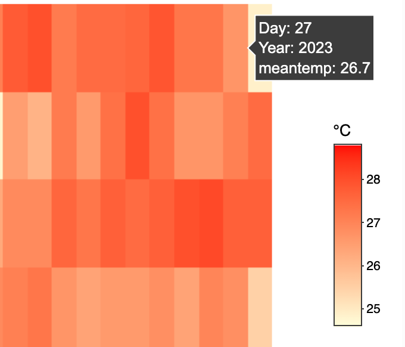

pacman::p_load(ggiraph, plotly,
patchwork, DT, tidyverse, dplyr, ggthemes) Take-home Exercise 3
Be Weatherwise or Otherwise
1. Overview
1.1 Setting the Scene for This Take Home Exercise
As indicated by the office report and the accompanying infographic:
- The average daily temperatures are expected to rise by 1.4 to 4.6 degrees, and
- The difference in precipitation between the wet season (November to January) and the dry season (February and June to September) is anticipated to become more distinct.

1.2 The Task
For this take-home assignment, we are tasked to:
Select a weather station and retrieve historical daily data on temperature or rainfall from the website of the Meteorological Service Singapore.
Choose records of daily temperature or rainfall for a month from the years 1983, 1993, 2003, 2013, and 2023, and then craft a data visualisation driven by analytics.
Incorporate suitable interactive features to improve the experience of users in exploring data and/or in visual storytelling.
For this take home exercise 3, we have chosen the Changi weather station and decided to focus on the daily temperature data for the month of February across the years 1983, 1993, 2003, 2013, and 2023 to examine the hypothesis suggesting an increase in daily average temperatures between 1.4 to 4.6 degrees Celsius.
2. Getting Started
2.1 Loading Necessary R packages
We will utilise the following packages:
ggiraph for making ‘ggplot’ graphics interactive.
plotly, R library for plotting interactive statistical graphs.
DT provides an R interface to the JavaScript library DataTables that create interactive table on html page.
tidyverse, a family of modern R packages specially designed to support data science, analysis and communication task including creating static statistical graphs.
patchwork for combining multiple ggplot2 graphs into one figure.
ggthemes is an R package that offers additional themes, geoms, and scales for ‘ggplot2’
The code which loads the R packages:
2.2 Import dataset
Of course our next step involves importing the dataset. As mentioned earlier, we will be analysing data from the Changi weather stations for the year 1983, 1993, 2003, 2013 and 2023.
Firstly, we need to import the 5 csv files using read_csv. We want to read and combine all the files as feb_combined since they all the files have the common column names and same number of columns.
Also, we have found out that the 2023 dataset, latin characters are present on some of the columns.
- ï..Station
- “Mean.Temperature..Â.C.”
- “Maximum.Temperature..Â.C.”
- “Minimum.Temperature..Â.C.”
Since we are only focusing on temperature data, we will discard the columns related to rainfall and windspeed. Also, I will rename these columns below accordingly.
- Mean Temperature (°C) -> meantemp
- Maximum Temperature (°C) -> maxtemp
- Minimum Temperature (°C) -> mintemp
Then I also will create a new column to find out the difference between the maxtemp and mintemp on a daily basis.
The following code snippet will outline the sequential steps we will undertake:
library(dplyr)
# Function to read and preprocess each file
read_and_preprocess <- function(file_path, encoding = "latin1", is_2023 = FALSE) {
data <- read.csv(file_path, fileEncoding = encoding)
# If the file is for the year 2023, rename columns with encoding issues
if(is_2023) {
data <- rename(data,
Station = `ï..Station`,
`Mean.Temperature...C.` = `Mean.Temperature..Â.C.`,
`Maximum.Temperature...C.` = `Maximum.Temperature..Â.C.`,
`Minimum.Temperature...C.` = `Minimum.Temperature..Â.C.`)
}
# Select and rename columns for consistency
data %>%
select(Station, Year, Month, Day, `Mean.Temperature...C.`, `Maximum.Temperature...C.`, `Minimum.Temperature...C.`) %>%
rename(meantemp = `Mean.Temperature...C.`,
maxtemp = `Maximum.Temperature...C.`,
mintemp = `Minimum.Temperature...C.`) %>%
mutate(difftemp = maxtemp - mintemp)
}
# Read and preprocess each file, with special handling for the 2023 file
feb_combined <- bind_rows(
read_and_preprocess("data/CHANGI_FEB1983.csv"),
read_and_preprocess("data/CHANGI_FEB1993.csv"),
read_and_preprocess("data/CHANGI_FEB2003.csv"),
read_and_preprocess("data/CHANGI_FEB2013.csv"),
read_and_preprocess("data/CHANGI_FEB2023.csv", is_2023 = TRUE)
)Afterwards, we want to find out the average temperature across the years. We will name this column yearly_avg_temp.
# Add a new column with the mean temperature for each year
feb_combined <- feb_combined %>%
group_by(Year) %>%
mutate(yearly_avg_temp = mean(meantemp, na.rm = TRUE)) %>%
ungroup()
Note
The code below is to display the combined file:
DT::datatable(feb_combined, class= "compact")3 Visualisation
3.1 Scatterplot
p1 <- ggplot(feb_combined, aes(x = as.Date(paste(Year, Month, Day, sep="-")), y = meantemp)) +
geom_point(aes(text = paste("Date:", paste(Year, Month, Day, sep="-"), "\nTemp:", meantemp, "°C")), size = 2, color = "blue") + # Keep points for daily temperatures
geom_line(data = feb_combined, aes(x = as.Date(paste(Year, Month, Day, sep="-")), y = yearly_avg_temp, group = 1), color = "red", size = 0.5) + # Keep the red line for yearly average temperatures
scale_x_date(breaks = as.Date(c("1983-02-01", "1993-02-01", "2003-02-01", "2013-02-01", "2023-02-01")),
labels = c("1983", "1993", "2003", "2013", "2023"),
date_labels = "%Y") +
labs(title = "Daily and Yearly Mean Temperature Over Years",
x = "Year",
y = "Temperature (°C)") +
theme_minimal()
# Convert to interactive plotly plot
interactive_p1 <- ggplotly(p1, tooltip = "text")
# Display the plot
interactive_p1This scatter plot visualises two types of temperature data over a span of several years, from before 1983 to 2023:
Daily Mean Temperature (Blue Dots): Each blue dot represents the mean temperature recorded on a specific day. The vertical axis shows the temperature in degrees Celsius (°C), while the horizontal axis represents the years. The exact date and temperature are displayed when you hover over a blue dot, as shown in the tooltip for the date 2003-2-23 with a mean temperature of 27.5 °C.
Average Annual Temperature (Red Line): The red line indicates the trend of the average annual temperature over the years. It appears to have a fluctuating pattern, with some years being warmer on average than others.
The scatter plot also suggests a wide range of daily temperatures within any given year, as seen by the vertical spread of blue dots for each year. The red line helps to identify whether there is an overall trend of increasing or decreasing average temperatures, which could be an indicator of climate patterns or changes. The plot is a useful way to visually compare daily temperatures to the average trend over a long time period.
Why is interactivity beneficial here?
Detailed Information on Demand: The ability to hover over individual data points to obtain specific information (such as the exact date and temperature) allows us users to explore the data in depth without overwhelming the visual presentation. In the provided scatter plot above, this means we can see the exact temperature on a given day, which is crucial for detailed analysis or for identifying outliers and anomalies.
Clarity in a Dense Plot: With many data points, a static scatter plot can become cluttered and difficult to read. Interactivity allows us users to focus on individual points of interest without being distracted by the sheer volume of data.
Trend Identification: By interacting with the data points along the trend line, we can observe how the annual average temperature changes over time, making it easier to spot patterns such as warming or cooling trends.
3.2 Lineplot
# Create the interactive line plot with customised hover text and x-axis ticks
p <- plot_ly(data = feb_combined, x = ~Year, y = ~yearly_avg_temp, type = 'scatter', mode = 'lines+markers',
marker = list(size = 10, color = 'red'), line = list(color = 'red'),
hovertemplate = paste("Year: %{x}<br>Temperature: %{y} °C<extra></extra>")) %>%
layout(title = "Yearly Average Temperatures (1983, 1993, 2003, 2013, 2023)",
xaxis = list(title = "Year",
tickvals = c("1983", "1993", "2003", "2013", "2023"), # Specify which ticks to show
ticktext = c("1983", "1993", "2003", "2013", "2023")), # Specify labels for the ticks
yaxis = list(title = "Yearly Average Temperature (°C)"),
hovermode = "closest")
# Render the plot with specified x-axis ticks
p
Key Findings:
Initial Point (1983): The graph starts at a peak with the average annual temperature recorded at 28.06 °C in 1983. This represents the highest recorded temperature over the 40-year span depicted.
First Decade Drop (1993): There is a sharp decline over the next decade to 26.71 °C in 1993. This decrease of approximately 1.35 °C is quite significant, suggesting a notable cooling period during these ten years.
Recovery Phase (2003): The year 2003 shows a rebound with the temperature rising to 27.09 °C. Although this is an increase of about 0.38 °C from 1993, it’s still below the starting temperature in 1983 by nearly 1 °C.
Lowest Point (2013): The year 2013 marks the lowest temperature on the plot at 26.53 °C. This further decrease suggests a continuation of the cooling trend, with temperatures dropping by approximately 0.56 °C from 2003 and 1.53 °C from 1983.
Partial Recovery (2023): By 2023, the temperature rises again to 26.95 °C. This increase of 0.42 °C from 2013 indicates a slight warming trend. However, the temperature in 2023 is still below the initial 1983 temperature by 1.11 °C.
The overall trend appears to be a downward trajectory from 1983 to 2013 with a slight increase in 2023. However, the graph does not show a simple linear decrease; rather, it fluctuates, suggesting variability in average temperatures over time. This could be due to a variety of natural climatic cycles or other environmental factors influencing average temperatures.
3.3 Heatmap
# Ensure 'Year' is treated as a factor with only display the 5 years
feb_combined$Year <- factor(feb_combined$Year, levels = c("1983", "1993", "2003", "2013", "2023"))
# Create the heat map with ggplot, specifying y-axis breaks
p <- ggplot(feb_combined, aes(x = Day, y = Year, fill = meantemp)) +
geom_tile(color = "white", size = 0.1) +
theme_tufte(base_family = "Helvetica") + # Using Tufte theme for a clean look
scale_fill_gradient(name = "°C", low = "lightyellow", high = "red") + # Adjust colour gradient
scale_y_discrete(limits = c("1983", "1993", "2003", "2013", "2023")) + # Specify y-axis to show only these years
labs(x = NULL,
y = NULL,
title = "Daily Mean Temperature in Changi for February") +
theme(axis.ticks = element_blank(),
plot.title = element_text(hjust = 0.5),
legend.title = element_text(size = 10),
legend.text = element_text(size = 8))
# Convert the ggplot object to an interactive plotly object
interactive_p <- ggplotly(p)
# Display the interactive plot
interactive_pThis heatmap visualises the daily mean temperatures for the month of February across five different years: 1983, 1993, 2003, 2013, and 2023.
- The X-axis represents the days of February, ranging from 1 to 28.
- The Y-axis lists the years in descending order, with 2023 at the top and 1983 at the bottom.
- Each cell in the heatmap corresponds to a specific day in February for a given year.
- The colour of each cell indicates the mean temperature for that day, according to the colour scale on the right side of the heatmap. The scale ranges from light colours (cooler temperatures) to dark colours (warmer temperatures). Lighter shades of the colour represent cooler temperatures, closer to 25°C, while darker shades signify warmer temperatures, approaching 28°C.
For instance, if one were to hover over a particular cell:
- The day would be indicated.
- The year would be shown.
- The mean temperature for that specific day and year would be displayed.
With reference to the image below, we can hover over the 27th February 2024 with a mean temperature of 26.7°C.

The heatmap shows variations in temperature across different days and years at a glance. Warmer days are immediately noticeable with darker colours, while cooler days are indicated by lighter colours. One can observe patterns such as particularly warm or cool periods during February for each year and compare the overall temperature profile across years. It seems there are fluctuations in temperature from year to year, with some years having wider spreads of temperatures throughout the month, while others show more uniformity.
Why is interactivity useful here?
Interactivity functionality in a heatmap, such as the ability to hover over cells to display specific data points, is particularly useful for several reasons:
Precision: While the colour gradations indicate temperature differences, precise values cannot be determined solely by sight, especially when dealing with a colour spectrum. Hovering to get exact figures allows for accurate data interpretation.
Detail: A heatmap can only show so much detail at once. Interactivity allows users to delve into the data, seeing the exact mean temperature for any day of interest without overcrowding the visual with numbers.
Comparison: It enables quick and easy comparisons between different days or years. Users can hover over various parts of the heatmap to compare specific data points without referring to a legend or scale repeatedly.
User Engagement: Interactivity increases user engagement. Users who can interact with the data are more likely to spend time understanding the trends and anomalies presented.
Accessibility: For those with colour vision deficiencies, distinguishing between colours might be challenging. Interactive elements that display numerical data can make the information accessible to a wider audience.
3.4 Box Plot across 5 years
feb_combined$Year <- as.factor(feb_combined$Year)
# Create the Plotly Box Plot
p <- plot_ly(feb_combined, y = ~`meantemp`, x = ~Year, type = 'box',
color = ~Year,
hoverinfo = 'y+x') %>%
layout(title = "Box Plot of Daily Mean Temperatures for February Over Decades",
xaxis = list(title = "Year"),
yaxis = list(title = "Mean Temperature (°C)"))
# Display the plot
pThe box plot illustrates the distribution of daily mean temperatures for the month of February over five distinct years: 1983, 1993, 2003, 2013, and 2023. For each year, the data is summarised as follows:
Key Findings
1983:
The maximum daily mean temperature reached 28.8°C.
The upper quartile (Q3) temperature was 28.55°C, indicating that 75% of the days had a mean temperature of 28.55°C or lower.
The median temperature was 28.1°C, which is the midpoint of the data.
The lower quartile (Q1) temperature was 27.75°C, suggesting that 25% of the days had a mean temperature below this value.
The minimum temperature recorded was 26.8°C.
1993:
The temperatures peaked at 27.5°C.
The third quartile was observed at 27°C.
The median temperature for this year was slightly lower at 26.75°C.
The first quartile was marked at 26.45°C.
There was a notable outlier at 25.5°C, which was significantly lower than the expected range.
2003:
The highest daily mean temperature noted was 28.2°C.
The temperature at the third quartile was 27.77°C.
The median temperature was 27.35°C.
The first quartile temperature came in at 26.45°C.
The lowest temperature recorded for the month was 25.3°C.
2013:
The maximum temperature reached a similar level as in 2003, at 28.3°C.
The upper quartile temperature decreased to 27.2°C.
The median temperature was 26.64°C, indicating a slight decrease from 2003.
The lower quartile was at 26°C. - The minimum temperature dropped to 24.6°C, showing a significant decrease from previous years.
2023:
The highest temperature observed was 28°C.
The third quartile temperature was at 27.5°C.
The median temperature was 27.05°C, suggesting a slight uptick from 2013. - The first quartile was at 26.7°C.
The minimum temperature saw a slight increase from the previous decade at 24.9°C, with a noticeable outlier just below the lower fence of 25.6°C.
From 1983 to 2023, there’s a noticeable fluctuation in temperatures with both the median and the interquartile range varying from year to year. The median temperature appears to show slight variations, without a clear upward or downward trend. However, there is evidence of increasing variability in temperatures, as seen in the wider interquartile ranges in the later years, particularly in 2023.
4. Conclusion
Scatterplot Analysis
The scatterplot shows both daily mean temperatures and average annual temperatures, indicating fluctuating patterns rather than a clear trend of increasing temperatures. The vertical spread of blue dots (daily mean temperatures) shows variability within years, and the red line (average annual temperature) suggests fluctuating patterns. This plot alone does not confirm the hypothesis of a steady increase in temperatures.
Lineplot Analysis
The lineplot reveals a fluctuating temperature trend over the specified decades:
- A significant drop from 1983 to 1993.
- A slight recovery in 2003.
- The lowest point in 2013.
- A partial recovery in 2023.
These fluctuations show a general downward trend until 2013, with a slight increase by 2023, contradicting the hypothesis of a consistent increase in average temperatures.
Heatmap Analysis
The heatmap provides a visual comparison of daily mean temperatures for February across the five selected years, showing variations in temperature with lighter shades indicating cooler temperatures and darker shades for warmer temperatures. This visual representation highlights variability but does not directly support the hypothesis of a continuous increase in temperatures.
Box Plot Analysis
The box plot data across the five years show fluctuations in temperatures, with noticeable variability and some years experiencing cooler temperatures than others. The median temperatures and interquartile ranges vary, indicating fluctuations rather than a clear upward trend. For example, the minimum temperatures show a slight decrease in 2013 compared to previous years but a slight increase in 2023.
In conclusion, based on our analyses, the hypothesis of a consistent increase in daily average temperatures between 1.4 to 4.6 degrees Celsius is not clearly supported. Instead, the temperature data for February from 1983 to 2023 at the Changi weather station shows fluctuations with periods of cooling and slight warming. While there is evidence of variability and slight increases in temperatures in certain years, the overall data do not confirm a steady or significant increase within the hypothesized range. Instead, the data suggest a more complex pattern of temperature changes, including periods of cooling and modest warming, which could be influenced by a variety of natural and anthropogenic factors.